ps军装照
站军姿
——我的军训日记（一）
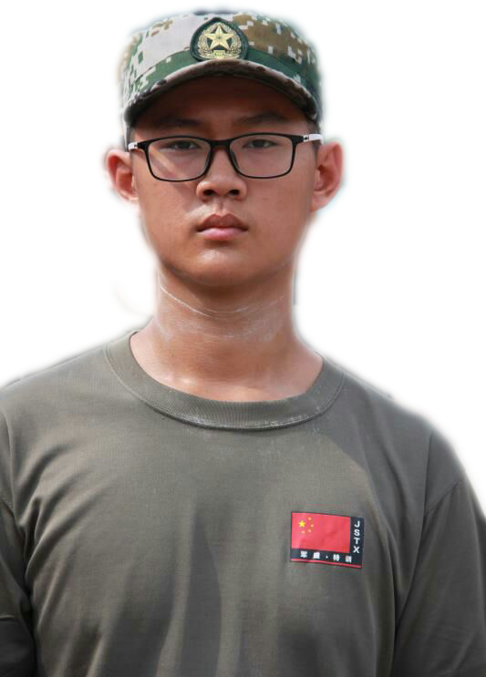
今天是我参加军事夏令营的第一天，是一个十分值得纪念的日子。时间过得真快，与父母在军事基地挥手离别似乎还是上一秒的事情，转瞬间已经和同学们一起军训了一天。第一天的生活有苦有乐，全是崭新的体验!
今天最主要的课程是站军姿。
教官首先告诉我们站军姿的要领，站军姿的时候脚尖需分开大概成60度，大拇指按紧食指第二个关节处，双手自然垂下放在裤缝线上，抬头挺胸，最后身体微微前倾，双脚必须“钉在”地上。
听来容易做来难，一站就是一上午！由于我长的高，教官一打眼就能看到我军姿站得不规范:我的手并没有放在裤缝线上，大拇指没有牢牢按紧食指第二关节，教官把我的身体微微往前调整了一下，在我站好之后，趁我不注意推了我一下，我重心不稳一个趔趄差点摔倒。教官马上对大家说：“三班的，听好了！按照我讲的要领，站笔直了！注意自己的手指、脚尖，整个人要‘钉在’地上！”这站军姿真不是一件容易的事情。每次15分钟的军姿考验。简直是人生最漫长最痛苦的经历，我们不敢乱动，连呼吸都要静止了。这时候我十分想念我的父母，十分想念那个能为我遮风挡雨的家，想念我那张舒适的床！
太阳似乎热情高涨，整个训练场如同火焰山，将我们身上烤得炙热，汗水哗哗地流下来。
当又饿又累的我做到餐桌旁，发现馒头稀饭都变得特别可爱。好一阵狼吞虎咽！
晚上，换下衣服，发现我的手臂上有了清晰的肤色的分界线。
站军姿让我明白了要做好任何一件事，都要集中精力，反复练习。要成为一个独立自强男子汉，面对困难我不能退缩，在未来日子里，我要成为像真正军人那样不怕苦不怕累的人！
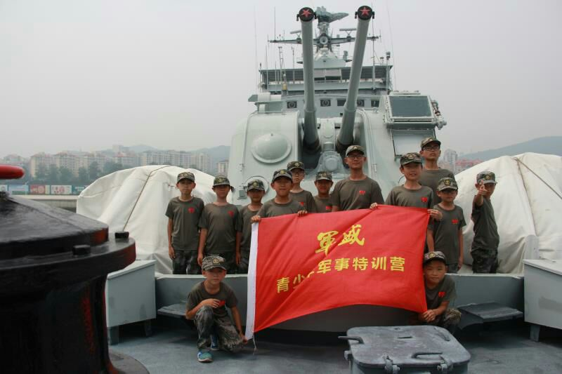
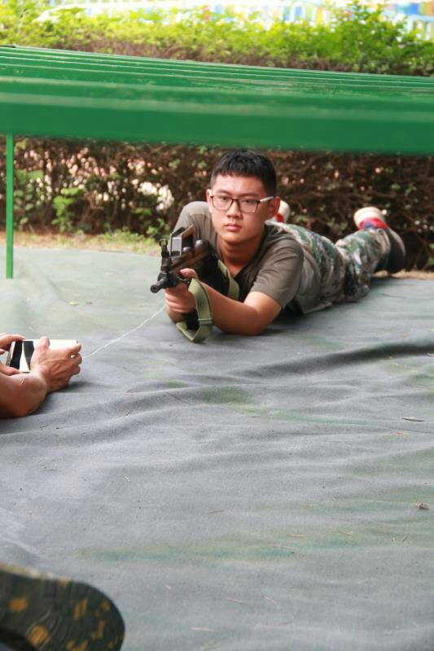
坚持不懈才是男子汉
——我的军训日记(二)
转眼间，在军事夏令营里已经度过五天。在这些特殊的日子里，我领悟到最高深的真谛就是坚持。只有坚持才能战胜每天训练的劳累。一整天的军训咬牙坚持下来，不抱怨不放弃，我就感觉了超越了自我，让我感到身心的愉悦与舒畅！
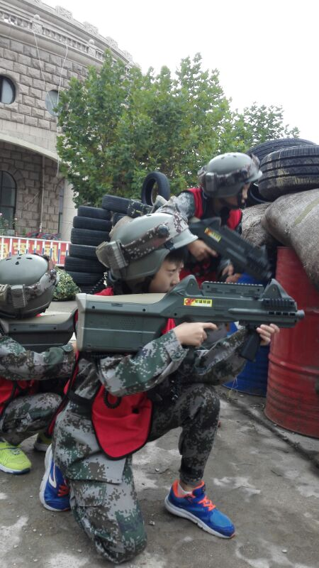
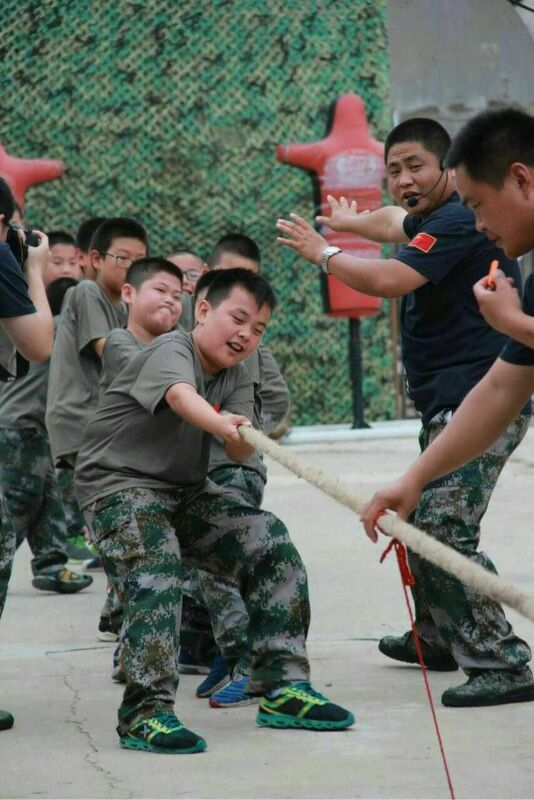
这几天的军训里，每天都有新的收获。从立正到稍息，从齐步走到正步走，从拉歌到表演操，从排练到联欢晚会。我每天都在体验着全新的军人生活。
每当我快要坚持不下去的时候，我就深吸一大口气，在心里悄悄告诉自己，我是男子汉，一定要坚持下去。在军训的这几天里我们都是在阳光与汗水中度过的，一件件湿透的衣衫成为了我们的“战利品”。 有的同学因站姿持续太久，或是受不了太阳的炙烤而申请休息片刻。绝大多数的同学都还在坚持着，稍作休息的同学也很快又返回队伍，继续坚持训练。
到了休息的时候，我们如释重负，每次都希望休息的时间能无限延长。每当这个时刻，教官总是要教我们吼上几首嘹亮的军歌。每每这个时候，我都恍惚间觉得自己成为了一名真正的军人！
短暂的休息过后，接下来又是军姿、齐步走、正步走、稍息、立正、报数、向左转、向右转等等这些基本动作的训练。临近军演了，大家都十分紧张也十分卖力，都希望把动作都做到位，不要辜负教官的严格教导。
我爱这苦中有乐的日子，简单而不枯燥，有历练的痛苦也会有甘甜的回报；我爱这具有节奏感的日子。大家团结一致，同甘共苦的日子将会值得怀念！今后，无论在人生中应对何种困难，我都会以勇敢不屈的精神，坚持不懈的意志去对待。而这种无畏的精神，坚强的意志将带给我意想不到的收获!
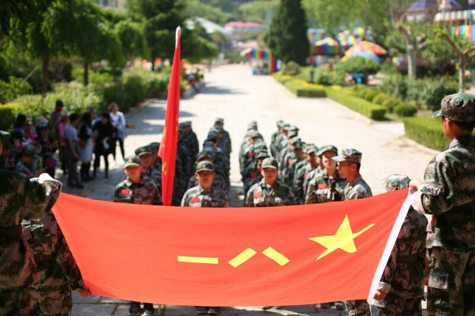
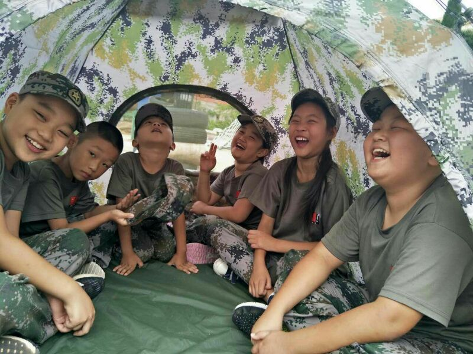
立志成为国家栋梁
在建军九十周年的阅兵仪式上，我被中国人民解放军的神韵所折服，整齐的步伐，飒爽的英姿，威严的口号，先进的武器装备深深吸引了我，震撼了我！那时，一个念头由然而生：我要当兵，做一名军人，成为对国家有用的人。
为此，在课堂上，我认真听讲，刻苦学习，在课下，我经常温习课本，巩固自己学到的知识，为往后的深入学习打下了扎实的基础；
在课余时间，我积极参加学校组织的各种活动，提高自己的身体素质。
在学校运动会期间，我踊跃报名最考验耐力的长跑项目，为班级献出自己的一份力；
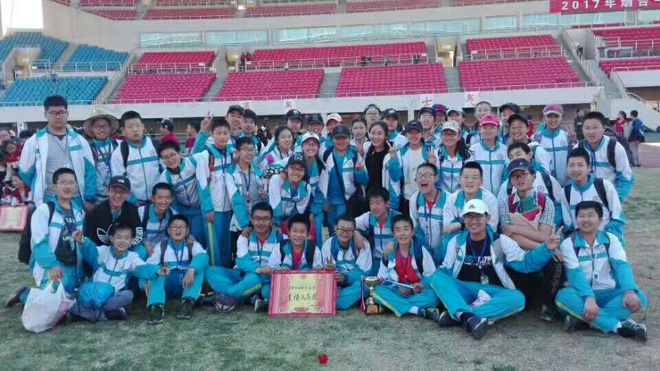
我参与学校的足球训练，不仅结交到好朋友，还锻炼了身体；
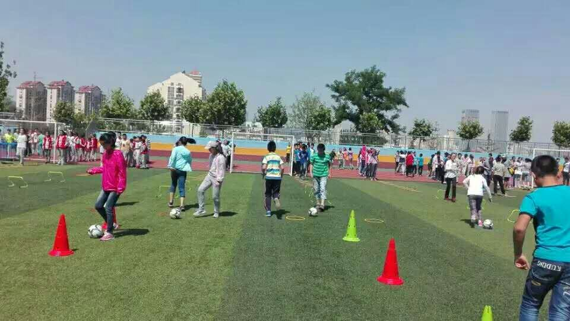
参加学校组织的太极拳操练，我领悟到了中国传统体育文化的精髓；
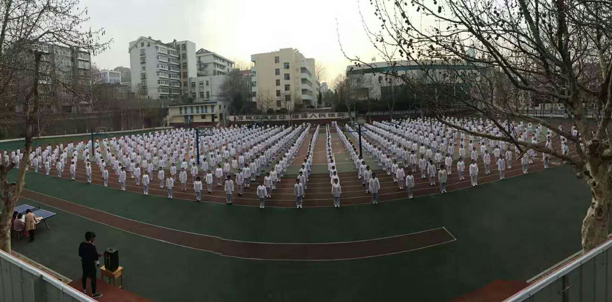
另外，我还积极参与到文艺活动中去。我担任学校文艺活动的主持人，学习到了说话的艺术，提升了自己谈吐间的能力；我还参加古装戏剧表演，在学习表演期间，我时常摸索以及体悟戏剧人物的思想感情， 为演好每一幕下了不少的工夫。
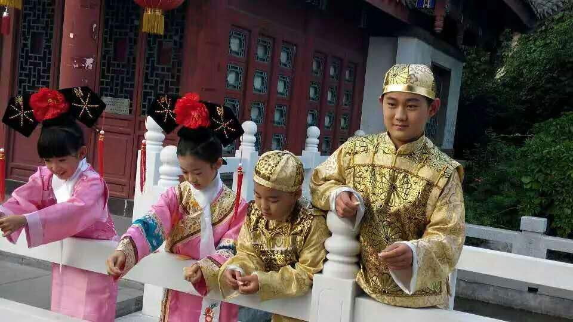
梦想是我们每个人不可缺少的，有梦想就有动力，这样才能激励我好好学习，天天向上，我不怕辛苦，一心为着梦想拼搏。长大以后我要成为一名合格的军人，为祖国效力，为人民奉献，做祖国的守护者。
我的军装照
中国人民解放军建军九十周年了，九十年风霜雨雪，九十年光辉历程！大家都沉浸在建军九十周年的喜悦之中，从全家人一起聚在电视机前看建军九十周年的阅兵仪式，再到同学们之间讨论建军九十周年新奇先进的武器装备，无不津津乐道。想必很多小伙伴都发现了，这两天微信朋友圈都被朋友的军装照刷屏了，我也按耐不住好奇的心，也想来个酷酷的军装PS，一起来看看我的军装照吧！
站军姿
——我的军训日记（一）
今天是我参加军事夏令营的第一天，是一个十分值得纪念的日子。时间过得真快，与父母在军事基地挥手离别似乎还是上一秒的事情，转瞬间已经和同学们一起军训了一天。第一天的生活有苦有乐，全是崭新的体验!
今天最主要的课程是站军姿。
教官首先告诉我们站军姿的要领，站军姿的时候脚尖需分开大概成60度，大拇指按紧食指第二个关节处，双手自然垂下放在裤缝线上，抬头挺胸，最后身体微微前倾，双脚必须“钉在”地上。
听来容易做来难，一站就是一上午！由于我长的高，教官一打眼就能看到我军姿站得不规范:我的手并没有放在裤缝线上，大拇指没有牢牢按紧食指第二关节，教官把我的身体微微往前调整了一下，在我站好之后，趁我不注意推了我一下，我重心不稳一个趔趄差点摔倒。教官马上对大家说：“三班的，听好了！按照我讲的要领，站笔直了！注意自己的手指、脚尖，整个人要‘钉在’地上！”这站军姿真不是一件容易的事情。每次15分钟的军姿考验。简直是人生最漫长最痛苦的经历，我们不敢乱动，连呼吸都要静止了。这时候我十分想念我的父母，十分想念那个能为我遮风挡雨的家，想念我那张舒适的床！
太阳似乎热情高涨，整个训练场如同火焰山，将我们身上烤得炙热，汗水哗哗地流下来。
当又饿又累的我做到餐桌旁，发现馒头稀饭都变得特别可爱。好一阵狼吞虎咽！
晚上，换下衣服，发现我的手臂上有了清晰的肤色的分界线。
站军姿让我明白了要做好任何一件事，都要集中精力，反复练习。要成为一个独立自强男子汉，面对困难我不能退缩，在未来日子里，我要成为像真正军人那样不怕苦不怕累的人！